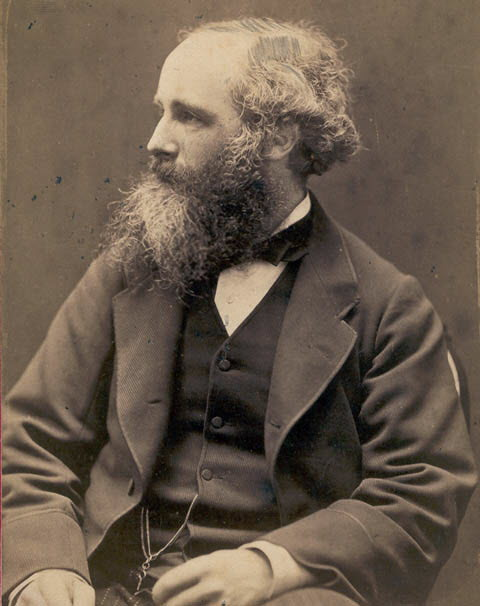

19th Century Scientists
19th Century to 20th Century.
Albert A. Michelson
| Born: | 1852 |
| Died: | 1931 |
| Known for: | Michelson-Morley experiment |
Michelson-Morley experiment
The Michelson–Morley experiment was an attempt to measure the motion of the Earth relative to the luminiferous aether, a supposed medium permeating space that was thought to be the carrier of light waves. The experiment was performed between April and July 1887 by American physicists Albert A. Michelson and Edward W. Morley at what is now Case Western Reserve University in Cleveland, Ohio, and published in November of the same year.
Charles Darwin
| Born: | 1809 |
| Died: | 1882 |
| Known for: | On the Origin of Species |
On the Origin of Species
On the Origin of Species (or, more completely, On the Origin of Species by Means of Natural Selection, or the Preservation of Favoured Races in the Struggle for Life) is a work of scientific literature by Charles Darwin that is considered to be the foundation of evolutionary biology; it was published on 24 November 1859. Darwin's book introduced the scientific theory that populations evolve over the course of generations through a process of natural selection although Lamarckism was also included as a mechanism of lesser importance. The book presented a body of evidence that the diversity of life arose by common descent through a branching pattern of evolution. Darwin included evidence that he had collected on the Beagle expedition in the 1830s and his subsequent findings from research, correspondence, and experimentation.
Lord Kelvin
| Born: | 1824 |
| Died: | 1907 |
| Known for: | units of kelvin |
units of kelvin
Absolute temperatures are stated in units of kelvin in his honour. While the existence of a coldest possible temperature, known as absolute zero, was known prior to his work, Kelvin is known for determining its correct value as approximately -273.15 degrees Celsius or -459.67 degrees Fahrenheit. The Joule-Thomson effect is also named in his honour.
James Clerk Maxwell
| Born: | 1831 |
| Died: | 1879 |
| Known for: | A Dynamical Theory of the Electromagnetic Field |
A Dynamical Theory of the Electromagnetic Field
The theory I propose may therefore be called a theory of the Electromagnetic Field, because it has to do with the space in the neighbourhood of the electric or magnetic bodies, and it may be called a Dygnamical Theory, because it assumes that in that space there is matter in motion, by which the observed electromagnetic phenomena are produced.